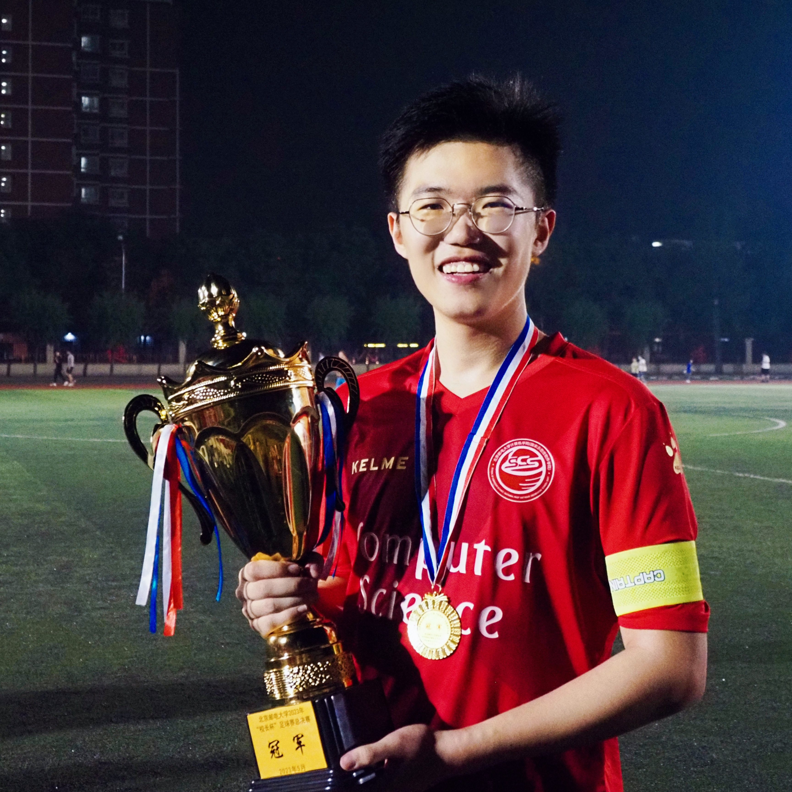
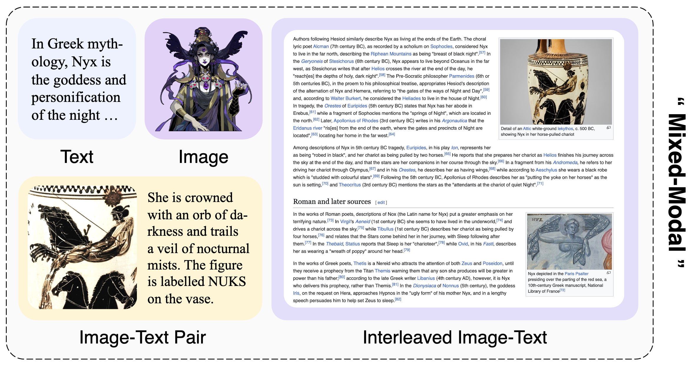
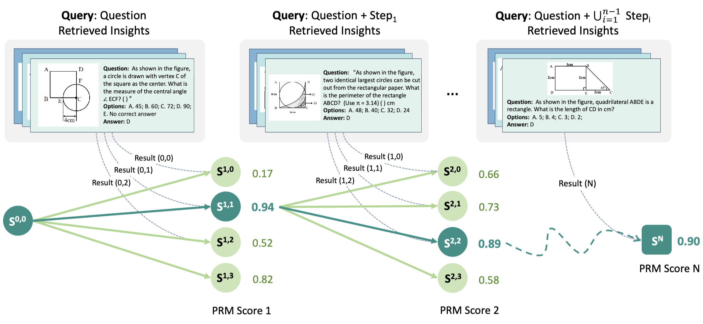
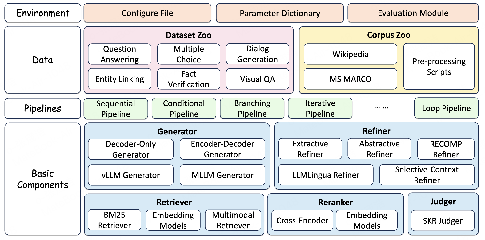
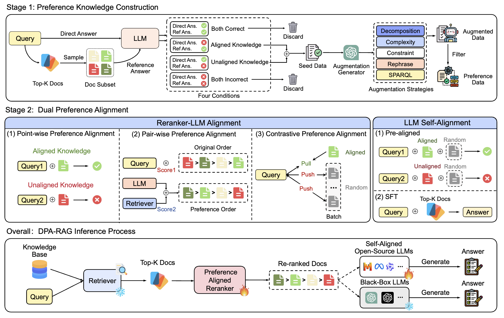

|
Chenghao Zhang
"Against stupidity the very gods
I'm Chenghao David Zhang, a 📚 Ph.D. student at the Gaoling School of Artificial Intelligence, Renmin University of China, under the supervision of Prof. Zhicheng Dou.
I earned my 🎓 B.Eng. degree in Software Engineering from the School of Computer Science, Beijing University of Posts and Telecommunications in 2024.
My research focuses on 🌈 multimodal information retrieval and 👀 vision-language models.
Outside my main research, I have a strong interest in 🧩 computer graphics. Email / Google Scholar / Twitter / Github / bilibili |
 |
ResearchI'm currently working on a unified multimodal retriever for RAG systems. Below are my prior works, with key papers highlighted. |
|  |
Towards Mixed-Modal Retrieval for Universal Retrieval-Augmented Generation
Chenghao Zhang, Guanting Dong, Xinyu Yang, Zhicheng Dou arXiv, Oct. 2025 arXiv | github | hf collection | hf paper We proposed Nyx, a unified mixed-modal retriever tailored for URAG scenarios, and constructed NyxQA, a large-scale mixed-modal QA dataset. |
|  |
Progressive Multimodal Reasoning via Active Retrieval
Guanting Dong, Chenghao Zhang, Mengjie Deng, Yutao Zhu, Zhicheng Dou, Ji-Rong Wen ACL, 2026 arXiv A framework designed to progressively improve the reasoning capabilities of MLLMs through Active Retrieval (AR) and Monte Carlo Tree Search (MCTS). |
|  |
FlashRAG: A Modular Toolkit for Efficient Retrieval-Augmented Generation Research
Jiajie Jin, Yutao Zhu, Guanting Dong, Yuyao Zhang, Xinyu Yang, Chenghao Zhang, Tong Zhao, Zhao Yang, Zhicheng Dou, Ji-Rong Wen WWW, Short-Paper, 2025 arXiv | github project A Python toolkit for the reproduction and development of RAG research. Including 36 pre-processed benchmark RAG datasets and 23 state-of-the-art RAG algorithms, and 7 reasoning-based methods that combine reasoning ability with retrieval. |
|  |
Understand what LLM needs: Dual preference alignment for retrieval-augmented generation
Guanting Dong, Yutao Zhu, Chenghao Zhang, Zechen Wang, Ji-Rong Wen, Zhicheng Dou WWW, 2025 arXiv A framework designed to align diverse knowledge preferences within RAG systems |

|
INTERS: Unlocking the Power of Large Language Models in Search with Instruction Tuning
Yutao Zhu, Peitian Zhang, Chenghao Zhang, Yifei Chen, Binyu Xie, Zheng Liu, Jirong Wen, Zhicheng Dou ACL, 2024 arXiv | bibtex | code | dataset A novel instruction tuning dataset, INTERS, encompassing 20 tasks across three fundamental IR categories: query understanding, document understanding, and query-document relationship understanding. The data are derived from 43 distinct datasets with manually written templates. |
ServicesTeaching Assistant
|
|
This website is adapted from Jon Barron's template. Many thanks! |